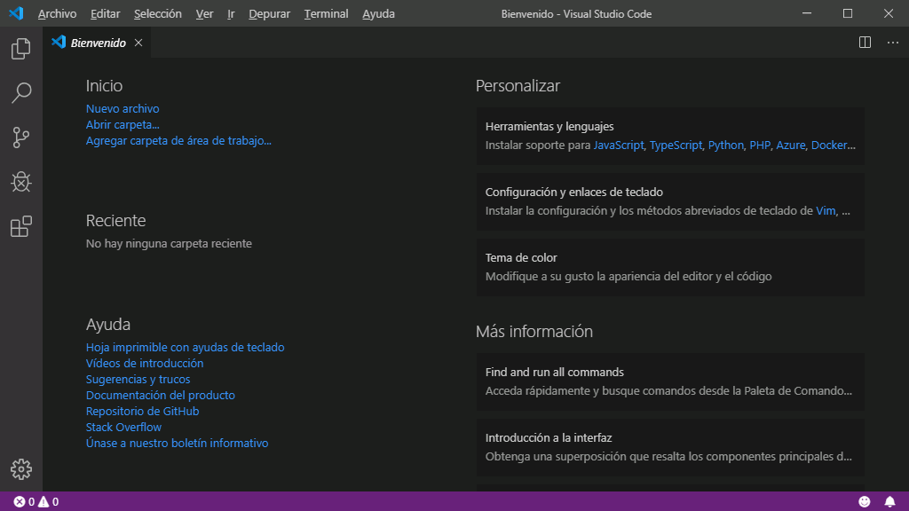
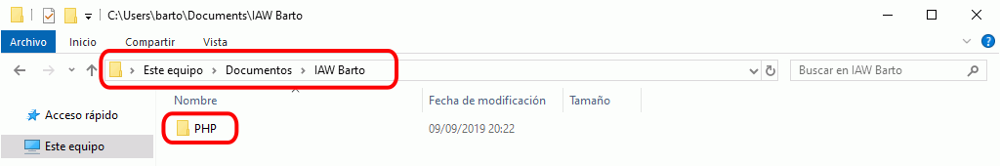
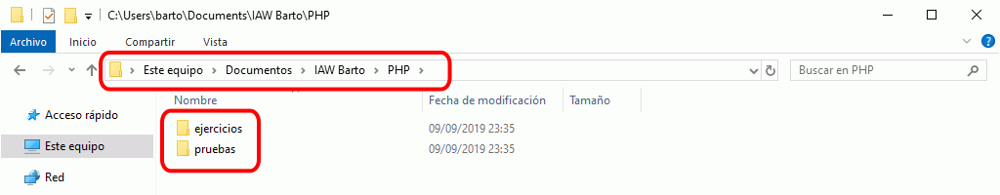
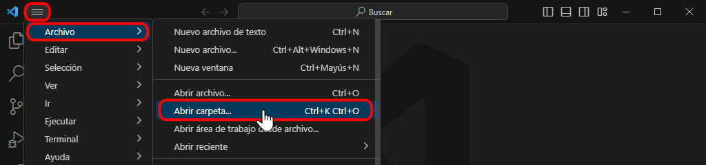
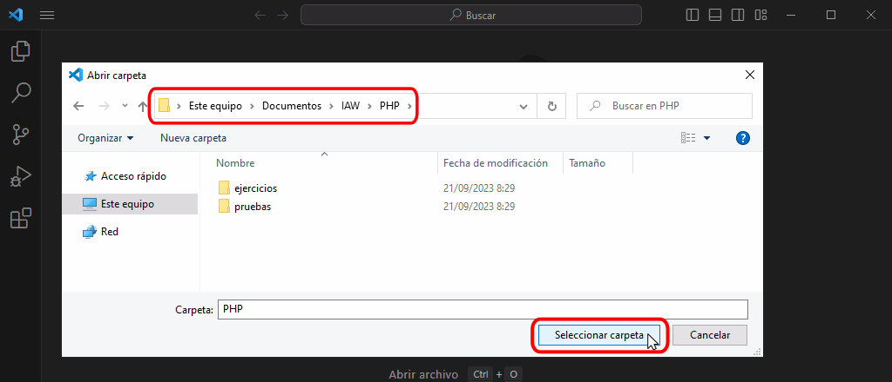
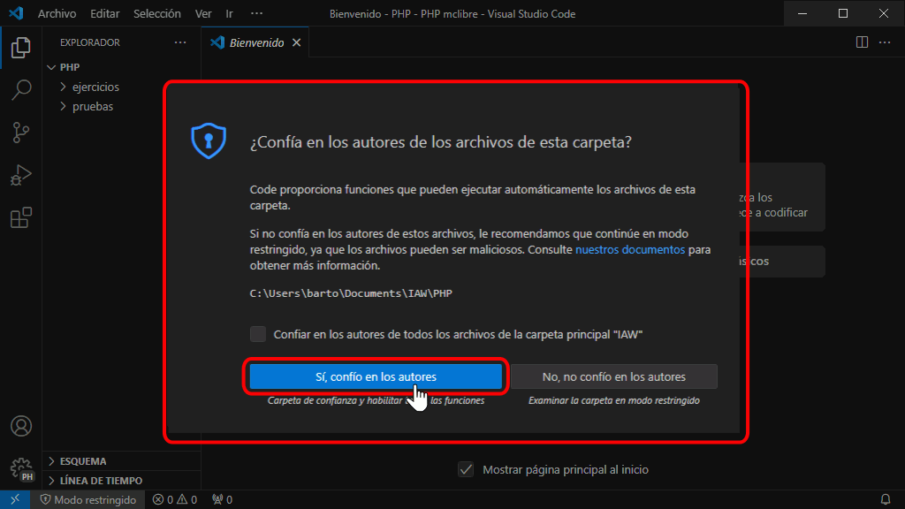
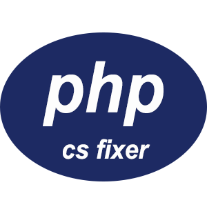

Esta es la configuración de Visual Studio Code que se recomienda para seguir este curso.
Esta lección no detalla los pasos para configurar Visual Studio Code. En caso necesario, puede consultar la lección Personalización de VSC de los apuntes de Informática general, en la que se explica detalladamente cómo se personaliza Visual Studio Code. En dichos apuntes también puede consultar lecciones dedicadas a Visual Studio Code, como Presentación general, Instalación, Uso y otras, que le pueden ser de ayuda si no conoce Visual Studio Code.
El tema de color es un aspecto muy personal por lo que se deja a elección del alumno el tema de color empleado.
En las capturas de los apuntes se empleará el Tema Dark+ (default dark).

En este curso Iniciación a la programación de páginas web en PHP de mclibre.org se utilizará una carpeta como área de trabajo de Visual Studio Code (no un Área de trabajo).





Estas son las extensiones que se aconseja instalar para seguir el curso Iniciación a la programación de páginas web en PHP de mclibre.org:
Autor: Bartolomé Sintes
Marketplace: mclibre Snippets
Repositorio GitHub: mclibre Snippets
Estos snippets permiten pegar código HTML en fragmentos PHP. Para ejecutarlos, se pueden utilizar estos enlaces de teclado:

Autor: junstyle
Marketplace: PHP CS Fixer
Repositorio GitHub: PHP CS Fixer
PHP Coding Standards Fixer (PHP CS-Fixer) es una herramienta creada por los autores del framework PHP Symfony. Esta extensión permite utilizarla en Visual Studio Code.
Una vez instalada, aplique la herramienta mediante el atajo de teclado habitual para formatear código Alt+Shift+f.
La herramienta CS Fixer no está diseñada para formatear archivos con fragmentos HTML y fragmentos PHP, por ello al formatear estos archivos únicamente se formateará el código PHP, no el HTML.
Notas:
La issue #27 es una de la que me gustaría ver resuelta antes de recomendar esta extensión.
Nota: En el apartado siguiente, Preferencias de configuración recomendadas, se han incluido las configuraciones de esta extensión, por lo que no hace incluirlas en este momento (pero sí debería crearse el archivo de configuración de PHP CS Fixer).
// Extensión PHP CS Fixer
//
// Ubicación del ejecutable de php-cs-fixer
"php-cs-fixer.executablePath": "${extensionPath}/php-cs-fixer.phar",
"php-cs-fixer.executablePathWindows": "${extensionPath}/php-cs-fixer.phar",
// Configuraciones de php-cs-fixer
"php-cs-fixer.onsave": false,
"php-cs-fixer.rules": "@PSR2",
"php-cs-fixer.config": "php-cs-fixer-config.php",
"php-cs-fixer.allowRisky": false,
"php-cs-fixer.pathMode": "override",
"php-cs-fixer.exclude": [],
"php-cs-fixer.autoFixByBracket": true,
"php-cs-fixer.autoFixBySemicolon": false,
"php-cs-fixer.formatHtml": false,
"php-cs-fixer.documentFormattingProvider": true,
//
//
Cree un fichero php-cs-fixer-config.php en la carpeta .vscode y copie en él la configuración recomendada para PHP CS Fixer que se muestra a continuación. Tenga en cuenta que el nombre del fichero se establece con la opción de configuración "php-cs-fixer.config" y el archivo de configuración puede estar fuera de la carpeta .vscode.
Las reglas disponibles en PHP CS Fixer se pueden consultar de forma individual en la documentación de PHP CS Fixer.
<?php
// Apuntes del curso Programación web en PHP
// https://www.mclibre.org/consultar/php/
//
// Archivo de configuración para PHP CS Fixer
// 2021-09-16
return (new PhpCsFixer\Config())
->setRules([
'@PSR2' => true,
'align_multiline_comment' => ['comment_type' => 'all_multiline'],
'array_indentation' => true,
'array_syntax' => ['syntax' => 'short'],
'binary_operator_spaces' => [
'default' => 'align_single_space_minimal',
'operators' => [],
],
'cast_spaces' => ['space' => 'none'],
'combine_consecutive_issets' => true,
'combine_consecutive_unsets' => true,
'concat_space' => ['spacing' => 'one'],
'declare_equal_normalize' => ['space' => 'single'],
'explicit_indirect_variable' => true,
'function_typehint_space' => true,
'include' => true,
'linebreak_after_opening_tag' => true,
'list_syntax' => ['syntax' => 'short'],
'lowercase_cast' => true,
'lowercase_static_reference' => true,
'magic_constant_casing' => true,
'magic_method_casing' => true,
'multiline_comment_opening_closing' => true,
'multiline_whitespace_before_semicolons' => true,
'native_function_casing' => true,
'native_function_type_declaration_casing' => true,
'new_with_braces' => true,
'no_alternative_syntax' => true,
'no_empty_statement' => true,
'no_extra_blank_lines' => true,
'no_mixed_echo_print' => ['use' => 'print'],
'no_multiline_whitespace_around_double_arrow' => true,
'no_short_bool_cast' => true,
'no_singleline_whitespace_before_semicolons' => true,
'no_spaces_around_offset' => true,
'no_superfluous_elseif' => true,
'no_trailing_comma_in_list_call' => true,
'no_trailing_comma_in_singleline_array' => true,
'no_unneeded_control_parentheses' => true,
'no_unneeded_curly_braces' => true,
'no_unset_cast' => true,
'no_unused_imports' => true,
'no_useless_else' => true,
'no_useless_return' => true,
'no_whitespace_before_comma_in_array' => true,
'no_whitespace_in_blank_line' => true,
'normalize_index_brace' => true,
'object_operator_without_whitespace' => true,
'ordered_imports' => true,
'phpdoc_align' => true,
'phpdoc_indent' => true,
'phpdoc_order' => true,
'phpdoc_scalar' => true,
'phpdoc_single_line_var_spacing' => true,
'phpdoc_trim' => true,
'phpdoc_types' => true,
'semicolon_after_instruction' => true,
'short_scalar_cast' => true,
'single_line_comment_style' => true,
'space_after_semicolon' => true,
'standardize_not_equals' => true,
'ternary_operator_spaces' => true,
'ternary_to_null_coalescing' => true,
'trailing_comma_in_multiline' => true,
'trim_array_spaces' => true,
'unary_operator_spaces' => true,
'whitespace_after_comma_in_array' => true,
])
->setIndent(" ")
->setLineEnding("\n");
Estas son las preferencias de configuración que se aconseja establecer para seguir el curso Iniciación a la programación de páginas web en PHP de mclibre.org.
En primer lugar, establezca las preferencias globales recomendadas en el curso de Páginas web HTML y hojas de estilo CSS de mclibre.org.
A continuación, añada las preferencias globales que se muestran a continuación, que son específicas para el curso de PHP.
Tenga en cuenta que estas preferencias deben añadirse dentro de las llaves inicial ({) y final (}).
Tenga en cuenta que puede ser necesario modificar las preferencias resaltadas del ejemplo siguiente:
// Configuraciones recomendadas para el curso Programación web en PHP de www.mclibre.org
//
// PHP
// Establece los valores de configuración que se reemplazarán para el lenguaje PHP
"[php]": {
"editor.tabSize": 4,
"editor.defaultFormatter": "junstyle.php-cs-fixer",
},
//
// PHP: Validate: Executable path
// Ubicación del intérprete de PHP.
"php.validate.executablePath": "C:/xampp/php/php.exe",
//
// PHP: Validate: Run
// Indica la validación se ejecuta al guardar o al escribir.
"php.validate.run": "onType",
//
//
// Configuraciones de extensiones recomendadas para el curso Programación web en PHP de www.mclibre.org
//
// Extensión PHP CS Fixer
//
// Ubicación del ejecutable de php-cs-fixer
"php-cs-fixer.executablePath": "${extensionPath}/php-cs-fixer.phar",
"php-cs-fixer.executablePathWindows": "${extensionPath}/php-cs-fixer.phar",
// Configuraciones de php-cs-fixer
"php-cs-fixer.onsave": false,
"php-cs-fixer.rules": "@PSR2",
"php-cs-fixer.config": "php-cs-fixer-config.php",
"php-cs-fixer.allowRisky": false,
"php-cs-fixer.pathMode": "override",
"php-cs-fixer.exclude": [],
"php-cs-fixer.autoFixByBracket": true,
"php-cs-fixer.autoFixBySemicolon": false,
"php-cs-fixer.formatHtml": false,
"php-cs-fixer.documentFormattingProvider": true,
//
//
Estas son las tareas que se aconseja crear para seguir el curso Iniciación a la programación de páginas web en PHP de mclibre.org.
Estas tareas se deben añadir a las tareas recomendadas en el curso de Páginas web HTML y hojas de estilo CSS de mclibre.org. Cree dichas tareas y después añada las tareas definidas a continuación. Tenga en cuenta que estas tareas deben añadirse dentro de la clave "tasks" (entre los corchetes inicial ([) y final (]) que definen la clave).
Una vez definidas las tareas, se recomienda definir los atajos de teclado que ejecuten estas tareas, tal y como se comenta en el apartado sobre Atajos de teclado recomendados.
Estos son los atajos de teclado que se aconseja definir para seguir el curso Iniciación a la programación de páginas web en PHP de mclibre.org.
Estas atajos se deben añadir a las atajos de teclado recomendados en el curso de Páginas web HTML y hojas de estilo CSS de mclibre.org. Cree dichos atajos de teclado y después añada los atajos de teclado definidos a continuación. Tenga en cuenta que estos atajos de teclado deben añadirse entre los corchetes inicial ([) y final (]).
Tenga en cuenta que la clave "args" del atajo debe coincidir con la clave "label" de la tarea correspondiente o con el nombre del snippet correspondiente.
//
// Atajos de teclado recomendados para el curso Programación web en PHP de www.mclibre.org
{
// Tarea: Abrir en localhost (Firefox)
"key": "ctrl+alt+l ctrl+alt+f",
"command": "workbench.action.tasks.runTask",
"args": "Abrir en localhost (Firefox)"
},
{
// Tarea: Abrir en localhost (Chrome)
"key": "ctrl+alt+l ctrl+alt+c",
"command": "workbench.action.tasks.runTask",
"args": "Abrir en localhost (Chrome)"
},
//